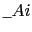
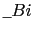
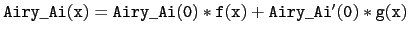
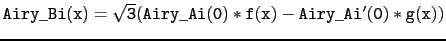
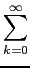
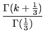
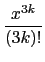
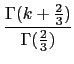
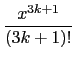

suivant: Les permutations
monter: Les réels
précédent: La fonction : Zeta
Table des matières
Index
Les fonctions de Airy : Airy_Ai et Airy_Bi
Airy_Ai et Airy_Bi a comme argument un réel x.
Airy_Ai et Airy_Bi sont deux solutions indépendantes
de l'équation :
y - x*y = 0.
On définit :
Airy(x) = (1/ )
) cos(t3/3 + x*t)dt
cos(t3/3 + x*t)dt
Airy(x) = (1/)(e-t3/3 + sin(t3/3 + x*t))dt
On a aussi :
Airy_Ai(x) vérifie :
 et
Airy_Bi vérifie :

où f et g sont deux séries entières solutions de
w - x*w = 0 :
f (
x) = 3
k



g(x) = 3k
On tape :
Airy_Ai(1)
On obtient :
0.135292416313
On tape :
Airy_Bi(1)
On obtient :
1.20742359495
On tape :
Airy_Ai(0)
On obtient :
0.355028053888
On tape :
Airy_Bi(0)
On obtient :
0.614926627446
Documentation de giac écrite par Renée De Graeve